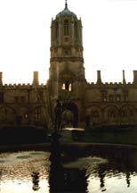

Lead a Session at OT2002

Lead a Session at OT2002 |
|
One of the most rewarding ways to participate in OT is to lead a session. This is your opportunity to ensure the conference deals with the issues that affect and interest you. You don’t necessarily have to be an expert - a good session is one that provides a structured forum for participants to develop their ideas, skills, and knowledge. A well-established shepherding process is in place to provide assistance and support to presenters.
Proposals for sessions are welcome on any aspect of contemporary software practice. Helen Sharp, this year's Programme Chair, will be glad to discuss your ideas.
Take a look at last year's programme.
25 September is the closing date for proposals.
How to submit a proposal |
|
If your proposal is accepted, you will be given help in working out the details and bringing it to fruition. You will be asked to produce a copy, by 18 January 2002, of the materials you will use during the session. You may make as many proposals as you like; at most one will be accepted per proposer. Joint proposals are welcome. Session leaders qualify for low conference fees. You and your colleagues should book early for discounted fees. Dates
|  |
Themes |
The themes here are given for guidance as to the areas of interest. Feel free to submit proposals in areas crossing these.
TechnologyTechology is the bottom line in software. Sessions might explore established or up-and-coming technologies, for example:
|
PeopleSoftware is an intensely human activity and understanding how to organise and support people is a key challenge in software development.
| |
ProcessUnderstanding the 'how' of software development and delivery.
|
PracticeSharing knowledge and experience is critical in the face of rapidly increasing complexity.
|
Formats |
| The OT conference has a tradition of active participation. We encourage conference sessions that bring people together to work and learn — in most cases, sessions are highly interactive, involving participants and session leaders on an equal footing. The types of session that typically make up the programme are described here, although if you are proposing a session and want to do something different, we always welcome new suggestions. | |||||
Workshop75 or 150 minutes |
Workshops are sessions in which participants work in a structured way on a topic set by the workshop organiser. At the end of the workshop, the participants, in conjunction with the workshop organiser, would normally produce and make available to other participants some conclusions and, ideally, suggestions for avenues worthy of further investigation. | Tutorial75 or 150 minutes |
A tutorial consists of a presentation on a clearly focussed topic
which is aimed at a defined category of software professional. For example
a tutorial could be aimed at experienced project managers, or at professionals
actively working on object-oriented design projects. You should have a
clear idea of what insights your participants will take away, and why they
will find these interesting.
While tutorials are expected to contain a certain amount of formal lecturing, you should try to incorporate a degree of interaction between participants, for example by including a quiz or questionnaire, or time to reflect and discuss how the tutorial content may be applied in the attendees' own circumstances. A summary of the tutorial topic together with a summary of any discussions would be suitable 'output' from a tutorial session. |
 |
|
Goldfish Bowl75 or 150 minutes |
A goldfish bowl provides an effective means of exploring the breadth
of opinion on a given topic. The session is started by a small discussion
group (say four or five people) consisting of specially invited participants,
with the rest of the participants forming an audience. Spare places in
the discussion group are available, and members of the audience may take
up these places when they feel they have a contribution to make. Members
of the discussion group leave their places when they have had their say,
making room for new participants.
The session should produce documentary output of the conclusions reached, typically in the form of a poster. |
Case Study75 or 150 minutes |
A case study session aims to describe real-life
experiences and lessons learnt. Discussion
of failures as well as successes is welcome. The experiences described
can be drawn from any aspect of contemporary software practice.
Useful topics to address in a case study session would be: rationale and consequences of technology choice for a particular project; experiences of designing and developing; effect of technology on development process; what went wrong and why; what went well and why; what lessons have been learnt from the experience. A summary of the case study covering these issues would be suitable 'output' from a case study session. |
||
Simulation75 or 150 minutes |
Given the complexity of the real-world environment in which we
practice software, it is often not possible to reflect clearly on the
way we work or to experiment with new approaches. Using simulations
and games however allows us to think about these situations with
increased clarity. A simulation leader must provide a clear and concise
summary of the purpose, rules and assumptions of the game, and guidance
for reflecting on the results of the game and its implications for real-world
practice. The output from the sessions is likely to include both
summary results from the simulation and a summary of its real-world
implications.
|
Think Tank75 or 150 minutes |
A think-tank session consists of a small group of people meeting to solve a particular problem or to find an agreed position on some issue. Think-tank sessions are intensive, focused and produce concrete output in the form of a poster for other conference participants. | ||
Working Group6 hours elapsed |
A working group is formed to conduct a detailed
exploration of some aspect of contemporary software practice, to identify how that aspect
can be advanced, and then to put in motion the work needed
to achieve this advance. Working groups are run to encourage the exchange
of ideas between practitioners and researchers with the aim of generating
or encouraging progress that is applicable to the software community at
large. A leader of a working group may require some pre-conference input
from participants (submission of a position paper or preparation of a pattern
for review, for example).
Formal working group sessions take place on the afternoon of Sunday 7 April 2002. Groups may continue to meet during and after the conference. |
||||
Web site host: TriReme International Ltd